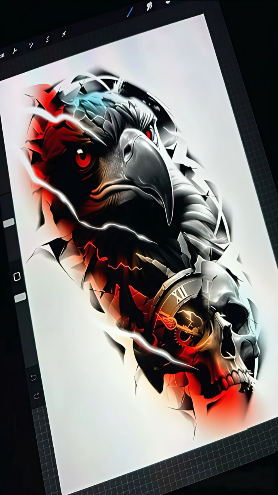
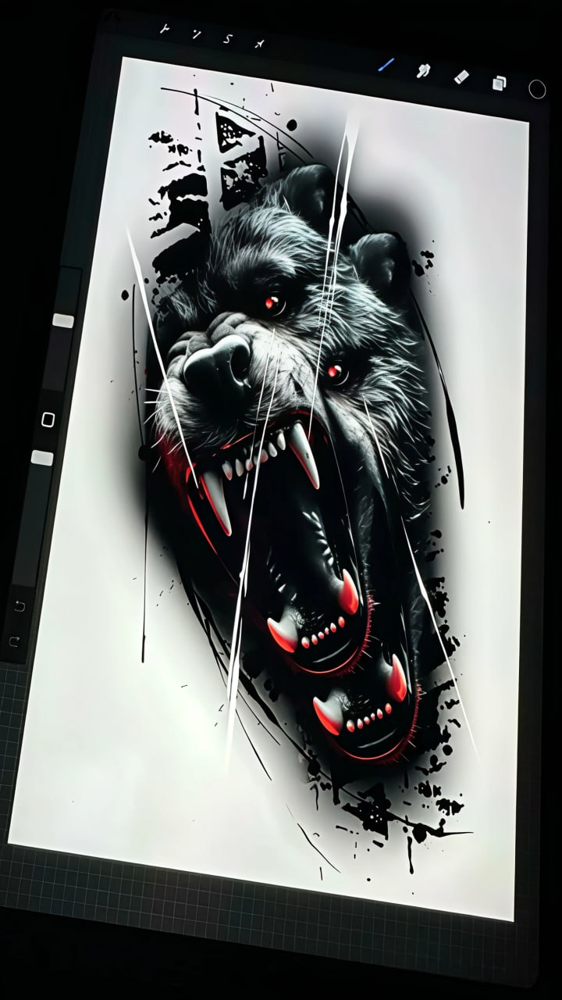

🎨 Предпросмотр YML Фида для Яндекс Услуг
Так ваши услуги будут выглядеть в Поиске Яндекса после загрузки фида
ℹ️ Важно: Это демонстрация. Реальное появление в Поиске Яндекса займет 1-3 дня после загрузки фида в Яндекс Вебмастер.
📍 Услуги исполнителей в Москве

Geometric Neo Brutalism
Голова волка, выполненная с использованием чётких геометрических форм и резких линий, подчёркивающих дикость образа. Уникальный дизайн в стиле нео-брутализм.

Cyber Gothic
Футуристичный ворон с технологичными элементами и контрастным светом, создающий мрачный и загадочный образ. Современный киберпанк стиль.

Abstract Dark Surrealism
Абстрактный череп с контрастными мазками и мрачной атмосферой, символизирующий жизнь и разрушение. Оригинальный дарк-сюрреалистический дизайн.

Expressive Animalism
Динамичный образ медведя с резкими линиями и тёмными акцентами, передающий ярость и мощь. Сильный анималистический дизайн в экспрессивной манере.

Predatory Realism
Реалистичный образ волка с акцентом на взгляд и оскал, передающий силу, агрессию и первобытный инстинкт. Высокая детализация в реалистичном стиле.
✅ Фид готов к загрузке!
Что делать дальше:
- Зайдите в Яндекс Вебмастер
- Выберите сайт irina-sketch.ru
- Перейдите в "Поисковую выдачу" → "Фиды"
- Добавьте фид:
https://irina-sketch.ru/feed.yml - Выберите категорию "Исполнители"
- Укажите регион: Москва и вся Россия
- Ожидайте проверки 1-3 дня